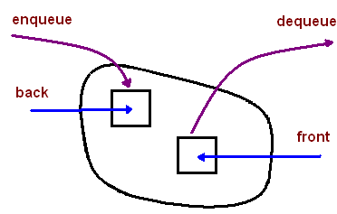

Colas#
¿Qué es una cola?
Es un contenedor de objetos donde se pueden insertar y extraer elementos siguiendo el principio FIFO (First In, First Out).
Tiene dos operaciones básicas:
Enqueue (insertar un elemento).
Dequeue (extraer un elemento).
Es una estructura de acceso limitado, ya que solo se puede insertar un elemento en la parte trasera y extraer desde el frente.
Representación gráfica de una cola:

Operaciones principales en la interfaz Queue en Java
boolean isEmpty()→ Determina si la cola está vacía.E peek()→ Devuelve el elemento en el frente sin eliminarlo (front()).E poll()→ Extrae el elemento en el frente (dequeue()).boolean offer(E item)→ Inserta un elemento al final de la cola (enqueue(E item)).
Definición del TAD Cola (Queue ADT)#
Nombre:
TAD Cola
Objeto abstracto:
\(Queue = \langle \langle e_1,e_2,e_3,...,e_n \rangle, front, back \rangle\)
Invariante:
\(0 \leq n \, \wedge \, Size(Queue) = n \, \wedge \, front = e_1 \, \wedge \, back = e_n\)
Operaciones del Constructor
Queue
Tipo:
\(~ \longrightarrow Queue\)
Descripción: Construye una cola vacía.
Precondiciones: Ninguna.
Postcondiciones: La cola es \(Queue = \emptyset\)
Operaciones Modificadoras
enqueue
Tipo:
\(Queue \times Element \longrightarrow Queue\)
Descripción: Inserta un nuevo elemento \(e\) al final de la cola \(q\).
Precondiciones:
\(q = \langle e_1,e_2,e_3,...,e_n \rangle\) y un elemento \(e\),
o \(q = \emptyset\) y un elemento \(e\).
Postcondiciones:
\(q = \langle e_1,e_2,e_3,...,e_n, e \rangle\),
o \(q = \langle e \rangle\).
dequeue
Tipo: \(Queue \longrightarrow Element\)
Descripción: Extrae el elemento del frente de la cola \(q\).
Precondiciones: \(q \neq \emptyset\), es decir, \(q = \langle e_1,e_2,e_3,...,e_n \rangle\).
Postcondiciones:
\(q = \langle e_2,e_3,e_4,...,e_{n-1} \rangle\).
Elemento devuelto: \(e_1\).
Operaciones Destructoras
~Queue
Descripción: Destruye la cola \(q\) y libera la memoria.
Precondiciones:
Existe una cola \(q\)
Postcondiciones:
La cola es eliminada.
Operaciones adicionales en la Cola (Queue)
front
Tipo:
\(Queue \longrightarrow Element\)Descripción: Recupera el valor del elemento en el frente de la cola.
Precondiciones:
\(q \neq \emptyset\), es decir, \(q = \langle e_1,e_2,e_3,...,e_n \rangle\)
Postcondiciones:
Retorna el elemento \(e_1\).
isEmpty
Descripción: Determina si la cola \(q\) está vacía o no.
Precondiciones:
Existe una cola \(q\)
Postcondiciones:
Retorna
Truesi \(q = \emptyset\)Retorna
Falsesi \(q \neq \emptyset\)
Axiomas que deben garantizar las operaciones de acceso en una Cola ADT
Sea \(q\) una cola y \(e\) un elemento:
\((q.Queue()).isEmpty() = true\)
\((q.enqueue(e)).isEmpty() = false\)
\((q.Queue()).front() = \text{error}\)
Precondición: \(q.isEmpty() = true\)
\((q.enqueue(e)).front() = e\)\((q.Queue()).dequeue() = \text{error}\)
Precondición: \(q.isEmpty() = false\)
\((q.enqueue(e)).dequeue() = (q.dequeue()).enqueue(e)\)
¿Cómo implementar la Cola ADT?#
De manera dinámica
De manera estática